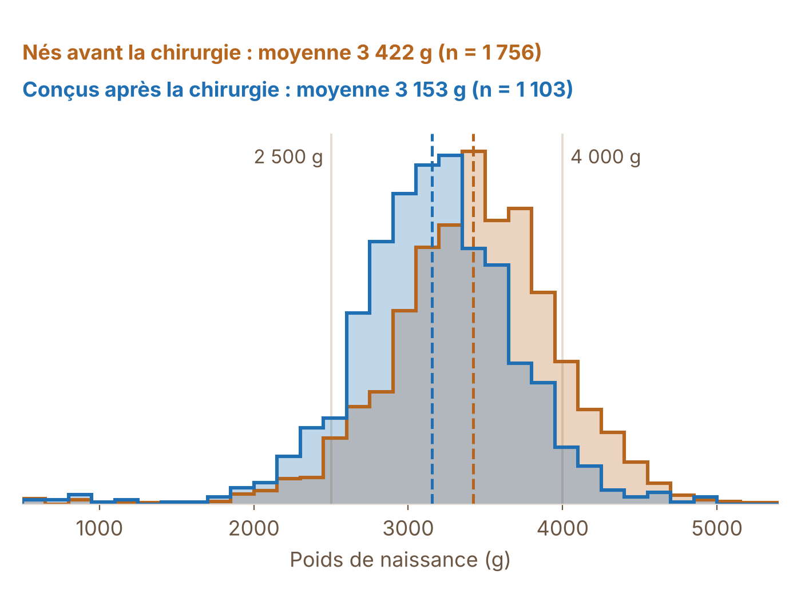
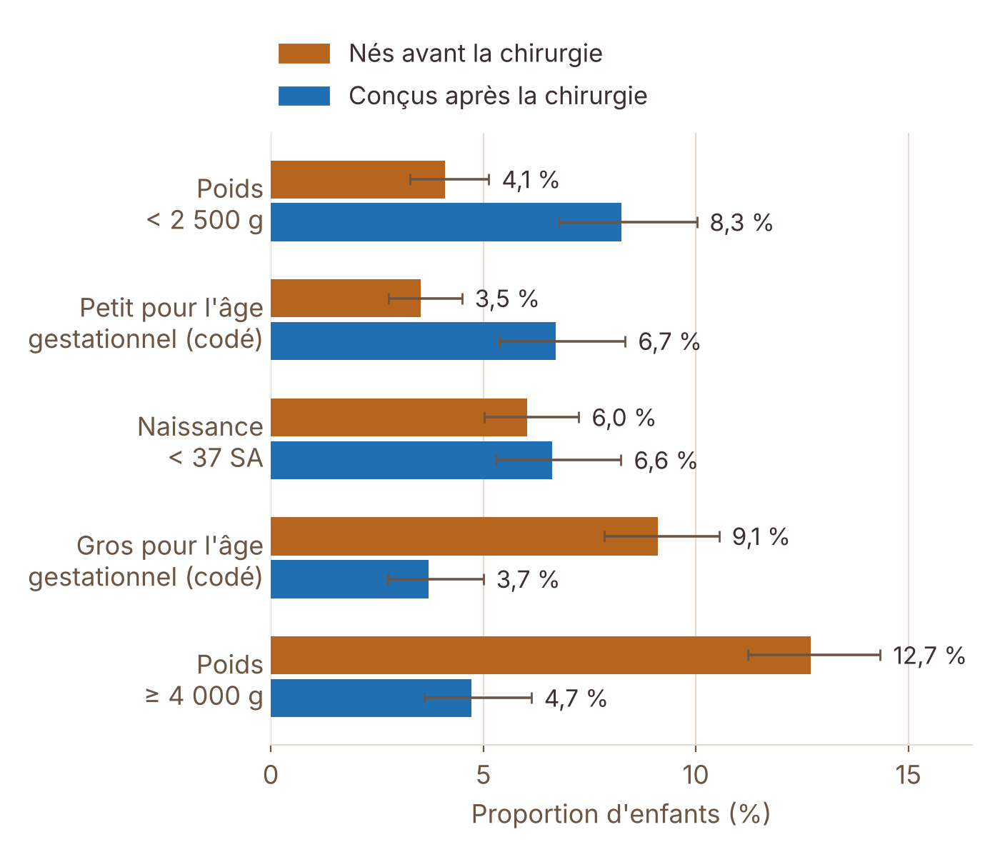
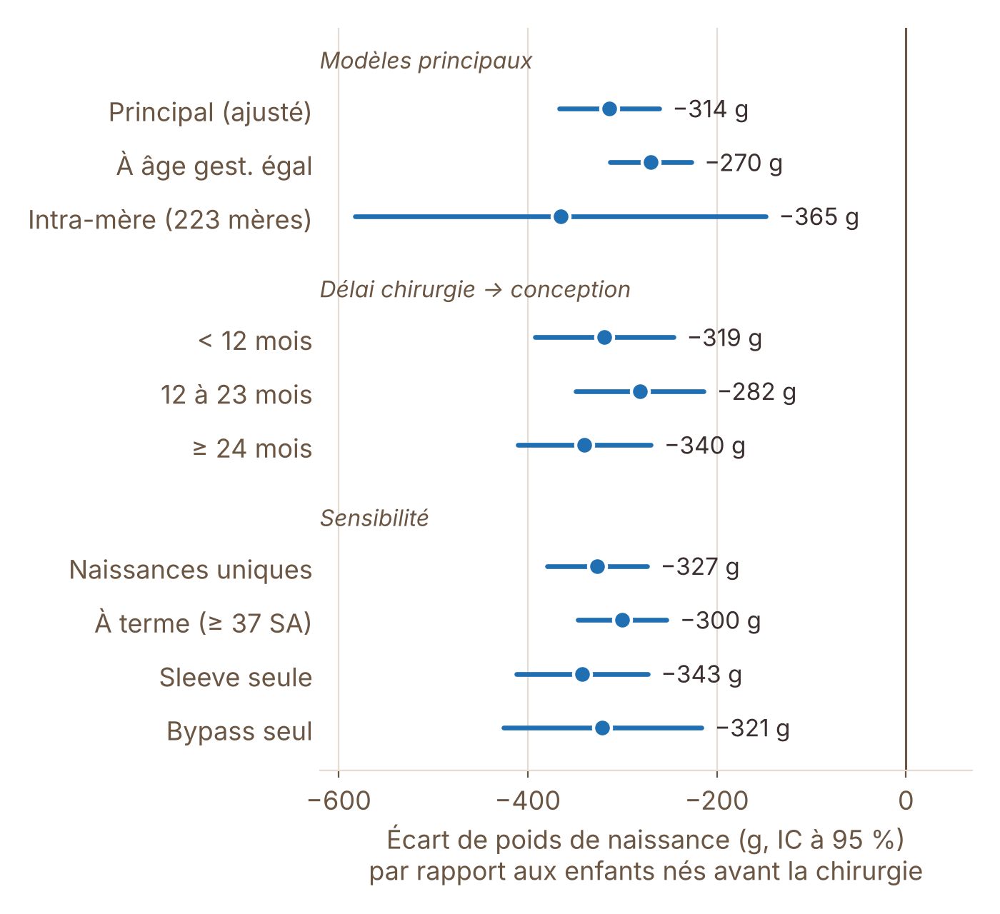

Chirurgie maternelle et poids de naissance
« À âge gestationnel égal, les enfants conçus après la chirurgie bariatrique de leur mère pèsent en moyenne 270 g de moins à la naissance. »
La chirurgie bariatrique permet à de nombreuses femmes en situation d’obésité de perdre du poids avant une grossesse. Cette étude exploratoire s’intéresse à ce que cela change pour l’enfant : le poids de naissance diffère-t-il selon que la mère a été opérée avant ou après la conception ?
Analyse exploratoire menée sur des extraits pseudonymisés de données hospitalières dans le cadre du Master 2. Seuls des résultats agrégés sont présentés.
Objectif du projet
L’objectif est d’évaluer dans quelle mesure :
- le poids de naissance des enfants conçus après la chirurgie de leur mère diffère de celui des enfants nés avant ;
- cette différence se retrouve sur le risque de petit poids (< 2 500 g) et de macrosomie (≥ 4 000 g) ;
- elle persiste quand on compare des frères et sœurs d’une même mère, et selon le délai entre la chirurgie et la conception.
Données et préparation
Deux fichiers hospitaliers pseudonymisés (codage CIM-10 et CCAM) ont été reliés par l’identifiant de la mère : un fichier mères (séjour de chirurgie, âge à l’accouchement, diagnostics obstétricaux) et un fichier enfants (sexe, âge gestationnel, poids, diagnostics néonataux). Les deux fichiers comportent une ligne par diagnostic ; ils ont été ramenés à une ligne par enfant. Les dates sont tronquées au mois.
| Étape | Enfants |
|---|---|
| Enfants dans le fichier (2 000 mères) | 3 658 |
| Exclus : attributs contradictoires pour un même enfant (poids, âge gestationnel…) | − 96 |
| Exclus : 25 identifiants « mère » partagés (de 5 à 276 enfants chacun) | − 650 |
| Exclus : accouchement non retrouvé (âge maternel manquant) | − 41 |
| Exclus : chirurgie pendant la grossesse ou le même mois | − 12 |
| Enfants analysés (1 932 mères) | 2 859 |
Exposition et critères de jugement
Exposition. Le moment de la conception par rapport à la chirurgie, estimé à partir de la date de naissance et de l’âge gestationnel :
- Avant : enfant né avant la chirurgie de sa mère (n = 1 756) ;
- Après : enfant conçu après la chirurgie (n = 1 103), découpé en trois délais : moins de 12 mois (n = 250), 12 à 23 mois (n = 324), 24 mois ou plus (n = 529).
Critères. Poids de naissance (g), poids < 2 500 g, poids ≥ 4 000 g, naissance avant 37 semaines, et « petit » ou « gros » pour l’âge gestationnel d’après les codes diagnostiques néonataux (CIM-10 P05.0-P05.1 et P08.0-P08.1).
Méthodologie statistique
- Poids de naissance : régression linéaire, avec erreurs standards robustes regroupées par mère (plusieurs enfants d’une même mère ne sont pas indépendants).
- Critères binaires : régression logistique, odds ratios (OR) bruts et ajustés, mêmes erreurs standards.
- Ajustement : sexe de l’enfant, âge de la mère, rang de naissance, naissance multiple, année de naissance, type de chirurgie (sleeve, bypass, anneau).
- « À âge gestationnel égal » : ajout de l’âge gestationnel en semaines, pour séparer l’effet sur la durée de grossesse de l’effet sur la croissance.
- Comparaison intra-mère : modèle à effets fixes « mère » sur les 223 mères ayant des enfants nés avant et après la chirurgie (501 enfants), qui neutralise tout ce qui est stable au sein d’une famille.
- Sensibilité : naissances uniques seulement, naissances à terme, sleeve seule, bypass seul.
Résultats
Description des deux groupes
| Caractéristique | Avant | Après |
|---|---|---|
| Enfants | 1 756 | 1 103 |
| Poids moyen, g (écart-type) | 3 422 (547) | 3 153 (539) |
| Âge gestationnel moyen, SA | 39,0 | 38,8 |
| Filles, % | 48,9 | 47,6 |
| Naissances multiples, % | 1,8 | 2,4 |
| Âge maternel moyen, ans | 29,0 | 30,8 |
| Année de naissance moyenne | 2013,9 | 2016,1 |
| Chirurgie : sleeve / bypass / anneau, % | 66 / 27 / 7 | 53 / 25 / 20 |
| Diabète gestationnel, % | 19,4 | 9,2 |
| Troubles hypertensifs, % | 9,6 | 3,5 |
| Obésité codée au séjour, % | 28,4 | 16,8 |
Avant : enfants nés avant la chirurgie de leur mère. Après : enfants conçus après la chirurgie.
Distribution du poids de naissance

La distribution entière se décale vers le bas : −270 g en moyenne (IC à 95 % : −313 à −226), et −314 g après ajustement (−367 à −261). À âge gestationnel égal, l’écart est de −270 g (−313 à −227) : une partie de la différence passe par un âge gestationnel un peu plus court, mais l’essentiel correspond à des enfants plus petits à terme égal.
Petits poids et macrosomie

| Critère | Avant | Après | OR ajusté [IC 95 %] |
|---|---|---|---|
| Poids < 2 500 g | 4,1 % | 8,3 % | 2,17 [1,39 – 3,39] |
| Petit pour l’âge gest. (codé) | 3,5 % | 6,7 % | 2,02 [1,31 – 3,12] |
| Naissance < 37 SA | 6,0 % | 6,6 % | 1,12 [0,73 – 1,74] |
| Gros pour l’âge gest. (codé) | 9,1 % | 3,7 % | 0,33 [0,21 – 0,53] |
| Poids ≥ 4 000 g | 12,7 % | 4,7 % | 0,26 [0,18 – 0,38] |
Robustesse des résultats

L’écart reste compris entre −270 g et −365 g dans tous les modèles. La comparaison intra-mère donne −365 g (−582 à −148) : le résultat ne s’explique donc pas seulement par des différences entre familles, même si l’intervalle est large (223 mères). L’écart ne varie pas nettement avec le délai entre la chirurgie et la conception (−319 g, −282 g, −340 g).
Principaux enseignements
- Les enfants conçus après la chirurgie pèsent en moyenne 270 à 314 g de moins à la naissance (selon l’ajustement), avec environ deux fois plus de poids < 2 500 g (OR = 2,17).
- La macrosomie est près de trois fois moins fréquente (12,7 % contre 4,7 % ; OR = 0,26), tout comme les enfants gros pour l’âge gestationnel (OR = 0,33).
- Les naissances prématurées ne diffèrent pas nettement (OR = 1,12 ; IC 0,73–1,74) : l’écart de poids n’est pas qu’une question de prématurité.
- Les mères ont aussi moins de diabète gestationnel (19,4 % contre 9,2 %) et de troubles hypertensifs (9,6 % contre 3,5 %). Ces tendances vont dans le sens de ce que rapporte la littérature sur la chirurgie bariatrique.
- Le décalage de la distribution est favorable pour la macrosomie et ses complications, mais il augmente la part de petits poids : un équilibre à surveiller en suivi de grossesse.
Limites et perspectives
- Pas de groupe de mères non opérées. La comparaison porte sur des enfants nés avant ou après la chirurgie, ce qui ne permet pas de séparer l’effet de la chirurgie de celui du temps (âge de la mère, année, rang de naissance). L’ajustement et la comparaison intra-mère limitent ce biais, sans l’éliminer.
- Variables absentes : IMC avant la grossesse, prise de poids gestationnelle, tabagisme, taille et périmètre crânien de l’enfant (seul le poids est disponible).
- Mesure : « petit » et « gros » pour l’âge gestationnel reposent sur des codes diagnostiques, probablement sous-déclarés ; les dates sont tronquées au mois, ce qui rend la date de conception approximative (±1 mois).
- Qualité des données : des identifiants partagés et des attributs contradictoires ont dû être exclus (746 enfants, soit 20 %), ce qui peut introduire une sélection.
- Interprétation : ce sont des associations, pas une preuve de causalité. Une suite naturelle serait d’ajouter un groupe de mères non opérées appariées sur l’IMC, et des courbes de croissance de référence pour définir petit et gros pour l’âge gestationnel.
Compétences mobilisées
- Préparation de données hospitalières : liaison mère-enfant, détection d’anomalies, règles d’exclusion documentées (Python,
pandas). - Conception d’une étude observationnelle : définition de l’exposition, comparaison intra-mère, analyses de sensibilité.
- Modélisation : régressions linéaire et logistique à erreurs robustes (
statsmodels,scipy). - Visualisation de résultats épidémiologiques (
matplotlib). - Regard critique sur les biais et les limites des données de santé.